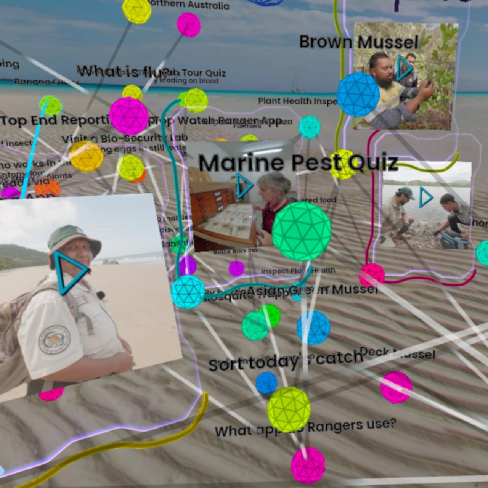

Developer Guide

Developer guide for the Grapho data science + storytelling toolkit
Grapho XR
See Grapho User Guide for non-developer documentation.
Properties
Grapho is designed around the power and simplicity of property graph databases. ie. where both database nodes and relationships (edges) can be assigned key / value properties.
Your source data does not necessarily need to be stored in a graph database but if it is, you can take immediate advantage of Grapho tool features
The following table sets out the Grapho visualisation schema
node
labels
The following Label types have specific implementations
| Label | Description |
|---|---|
| Handle | Handles are core to Grapho and the starting point for your XR graph journey. As such they are rendered differently from all other nodes. Think of a Grapho Handle as a pointer or a bookmark to a particular place in your graph. Use Handles to create deep links into your graph, to support editorial process (handles play nicely with NEXT relationships for curated paths through your data) and help manage clutter. Handles can be saved to your database or generated on the fly from dynamic query logic. See Grapho XR UI documentation |
properties
The following properties have specific implementations
| name | type | e.g. | description |
|---|---|---|---|
| name | str | “My node” | used as default label |
| colour OR color | str | “#ffffff” | override colour style |
| voiceover_override | bool | true | if true, voiceover is allowed to interrupt current voiceover, otherwise this is queued |
| voiceover_url | str | https://d1pxeqjdb63hyy.cloudfront.net/media/media/test-ux.ogg | plays voiceover when node opened. Supports WAV, MP3, and OGG formats |
| image_url | str | https://d1pxeqjdb63hyy.cloudfront.net/media/images/node_end-to-end-testing.original.png | displays image when node opened. Supports JPG, PNG |
| subtitles_url | str | https://mod.studio/documents/64/test-ux.vtt | displays subtitles when node opened - if voiceover_url available. Supports VTT and SRT formats |
relationship
properties
| name | type | e.g. | description |
|---|---|---|---|
| colour OR color | string | “#ffffff” | overrides colour style defined in the app |

Screenshot: Northern Biosecurity Training graphGrapho Machine
Environment Settings
Grapho Machine tools are typically preset with credentials to your database instances in a .env file.
When building a Grapho Machine from scratch, copy the env.sample file in each component to .env and fill in your real credentials.
grapho-server
grapho-server is a lightweight reference API server for the GraphoXR spatial browser.
Source code and documentation is available at https://github.com/modprods/grapho-server
Features
- OpenAPI compliant documentation
- REST API endpoints for graph database queries
- all - load all editorially curated paths (via their “handles”)
- game - load a complete graph for offline use
- Mux database queries (e.g. CYPHER, SQL) with local config
- Support for running on local desktop, on-premise hosting and cloud platforms
Handles
“Handles” are the mechanism by which editorially curated paths through your graph data are served to Grapho clients like GraphoXR.
Use Handles to design, curate and manage your graph data experiences.
Handles are simply nodes with the label “Handle”. They have special significence and are rendered differently to other nodes.
Use Handles to * The /all REST API method returns all Handles in the database * By default, selecting a Grapho database in Grapho XR will spawn all Handles as Tron-like disks. * Opening a Handle in a Grapho client will reveal all nodes linked to this Handle. * Handles can be configured to serve any style of data * By default Handles are configured to * Return the path of all nodes connected to me via the relationship NEXT * Return all nodes that are linked to this path by no more than 1 node (i.e. distance = 1)
grapho-server quickstart
To start exploring your own data, try creating a Handle linking to an existing node in your database.
Set up your own Grapho XR experience from scratch, all you need is a recent Meta Quest headset and the following free resources.
- Run Neo4j Desktop
- On your desktop or laptop
- Download and install Neo4j Desktop
- Create and run a new Neo4j database
- Open the database (with Browser)
- Click Guides
- Click “:guide movie-graph”
- Click “Next”
- Click PLAY icon in the code block
- Note the new “Node labels” and “Relationship types” appearing under “Database Information” (left column)
- Copy the following CYPHER query into the Neo4j Browser CLI
// Merge first handle
MERGE (n:Handle {label:'Enter the Matrix'})
SET n.name = n.label
WITH n
MATCH (o:Movie {title:a'The Matrix'})
MERGE (n)-[:NEXT]->(o)
RETURN n, o- Click the RUN icon (blue arrow to the right of prompt)
- Run grapho-server container in Docker Desktop
See README in grapho-server repo
https://github.com/modprods/grapho-server
- Run Grapho XR Demo on Meta Quest HMD
- Open Browser
- Confirm you can access grapho-server URL (you may need to give permission for “unsafe” URL)
i.e.
http://<YOUR SERVER LAN IP>:5042- Copy URL
- Install and run the free Grapho XR Demo from Meta Store
- Press SETTINGS button (three vertical lines) on left controller
- Click “Paste” button under API_ROOT_URL
- Select your database name under Database
- Press SETTINGS button to close panel
- <the “Enter the Matrix” handle should spawn>
- Use GRAB button to grab handle and flip it over to open
You now have your own Grapho service equivalent to demo.grapho.app.
See /deploy in source code for example configurations when using grapho-server in production.
See Properties for how to prepare your graph for use in Grapho.